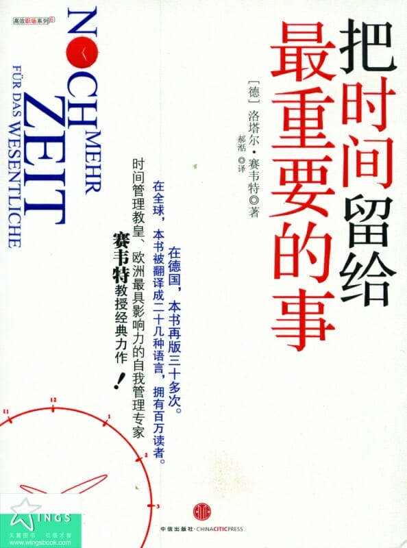

注：【】部分为笔者心得，非原文摘抄。
- 去除所有的障眼物，使最重要的部分突显出来——这就是米开朗琪罗成功的秘密！
- 压力总会催生更多反方向的压力。
- 每个人都在抱怨生活中的忙碌与混乱，殊不知其实是我们自己制造了这些忙乱。
- 之所以说是我们自己制造了这些忙乱，是因为这种要求自己越快越好的压力使现代人变得越来越浮躁。
- 无论是快是慢，速度本身都没有错，错的是把速度快慢看做衡量一切成败的人。
- 持续一心多用只会越来越累。
- 当时间在忙乱的安排中匆匆流逝时，紧张与松弛、忙碌与休闲之间的界限只会变得越来越模糊，最终混为一体，让我们生活越来越累。
- 公私平衡的精髓在于放慢速度，在于追求思想的深度，在于集中精力处理最重要的事。
- 我们并不需要在处理任何事情时都无止境地加速，也不需要随时随地都保持一心多用。
- 日复一日的忙乱生活阻碍了我们追求幸福的脚步，使我们失去了实现梦想和愿望的能力。
- 时间管理并不是教你买一本记事本，学会制定一个高效的日程表，也不是让你故意放慢速度，消极地应对生活中的压力。
- 人们常常以偏概全，将事业上的成功作为评价一个人价值的唯一标准。
- 健康的身体孕育健康的灵魂。
- 对人生意义与价值的追求是得到幸福与心理满足的基本前提。
- 真正的平衡在于质而不在于量。
- 到底什么才是我想要的？我不想要的又是什么？
- 永远都觉得自己没有时间的人，做的事其实最少。——克里斯托夫·利希滕贝格
- 日常生活的忙乱往往会让我们迷失自我。
- 没有选择与决定的生活是不可能达到平衡的。
- 一件事究竟是困难还是机遇，完全在于各人的不同看法。——保罗·威尔森
- 没有人能够做完所有的事，也没有人可以拥有一切。
- 只要你敢于放弃生活中次要的方面，集中精力关注重要的事，你最终获得的就不仅是成功，还有最宝贵的平衡生活。
- 千万不要只顾追求表面的高效率，不断地盲目加速，却忘记了自己生活与工作的重心。
- 真正懂得慵懒的意义的人才能更轻松地找到生活的平衡点，而且，放松与享乐也是创造力与灵感的最佳源泉。
- 平衡是要我们不断寻找或创造的，平衡是通过持续的重新调整获得的，平衡是需要坚持不懈地努力的。
- 寻找平衡的过程，就是你寻找自我的过程。
- “没时间”的潜台词通常就是“没兴趣”。
- 自知是自善的第一步。
- 【不让习惯主宰生活，时不时地“叛逆”能带来新鲜空气和意想不到的乐趣。】
- 【有效的时间管理其实是效率管理，其目的是寻找生活的平衡点。】
- 没有什么能比任人摆布更费时费力的了。
- 工作并不等于生活。
- 时间管理并不仅仅在于速度的快慢与效率的高低。
- 只有学会了劳逸结合，你才能够找到真正适合自己的生活节奏。
- 只有找到了属于自己的价值导向，你的时间管理才能获得成功，你的生活才会充满意义。
- 价值不仅自身拥有强大的能量，还能够给人带来身体与精神双方面的健康。
- 不仅人离不开价值，人生的成功同样也不能缺少正确的价值导向。
- 要想获得更高的成就、有更大的作为，我们必须首先学会主动地寻找价值，然后再根据它来做出选择与决定。
- 忘记别人的想法，好好问问自己是怎么想的吧！
- 只有看清了自己的内心，找到最符合自己个性的价值排序，你才能在寻找重要事情的路上顺利走下去。
- 每个人的价值取向都是很独特、很个人化，而且在长期内固定不变的。
- 当一个人怀疑自己的人生意义与价值时，他就是病了。——西格蒙德·弗洛伊德
- 人生道路是自己走出来的，生活冷暖也只有自己才最清楚，你不需要改变自己去迎合那些社会普遍认可的价值与行为规范，最重要的永远都是——而且只是——你个人的真实想法。
- 自由的选择空间往往也意味着更加困难的决策过程。
- 价值冲突最突出的表现通常是工作与私人生活之间的冲突与矛盾。
- 如果你想化解自身的价值冲突，千万不要试图通过强迫他人接受你的价值观来达到这一目的。
- 学会接受价值观差异，不要给别人制造不必要的压力，也不要总是试图去说服别人摒弃你眼中所谓“错误”的价值观。
- 要想成名就不能过于刻意。——亨利·福特
- 你不能改变人生的长度与宽度，你能改变的只是人生的深度。戈尔希·福克
- 如果只有幻想而从不付诸实践，那再美好的梦想也是毫无意义的。
- 有了坚定的决心，你一定能拉进梦想与现实之间的距离，最终实现最成功的自我。
- 一个始终目标明确的人，即使走的再慢，也比另一个毫无目标却跑得飞快的人更早到达终点。——戈特霍尔德·莱辛
- 【订立目标要遵循 SMART 原则：S，具体的；M，可衡量的；A，积极地；R，现实的；T，有时间限制的。】
- 总是没有时间的人注定一生都要为有目标的人工作。——博恩·崔西
- 要想达到目标，仅仅有足够的精力与严格的自律是不够的，许多时候我们还要懂得选择与放弃。
- 对某个特定目标的选择往往决定了你在未来的一段相当长的时期内的生活。
- 成功的因素之一是将目标形象化。
- 只要你在一段较长的时期内不断向自己做出心里暗示，潜意识就自然会信以为真。
- 【用潜意识激励自己，更自然，效果更好。】
- 色拉米战略：1，现将问题、目标和计划分别写下来；2，再把整体的任务分成多个单独的部分；3，根据每个部分所需的时间及其重要性安排出处理的先后顺序；，4，逐步完成任务，时刻掌握最终的结果。
- 只有那些既懂得合理分配体力又拥有最强耐力的选手，才有可能顺利完成整个比赛，最后脱颖而出。
- 通往成功的道路应该是充满快乐的，不切实际的急于求成只会令你对原本美好的梦想产生厌倦心理，影响你现在与将来的生活质量。
- 人都是害怕改变、害怕陌生事物的。
- 如果死守着一个不不适合自己个性或能力的目标不肯放手，只是一味地强调坚持，不计后果地强迫自己往前走，我们最终只会走进一条死胡同。
- 只有那些自己认为最重要的目标才是值得坚持的，也只有这样，我们的生活才能过得既成功又幸福。
- 成功一向都是个策略问题。
- 实现目标的四大原则：1，把精力集中在最重要的事情上；2，充分发挥自身强项；3，鼓起勇气挑战未涉足的领域；4，为他人提供价值。
- 通过对有限的资源的合理整合，我们将使其产出最大的效益，实现表面上看似不可能达到的目标。
- 将精力集中在自己的强项上，千万不要一味埋头于弥补弱项，却忽视了真正重要的强项。
- 在这个科学高度发达的时代，真正的全才往往是不存在的。
- 盲目跟风与拾人牙慧都是没有意义的。
- 宁可当村里的老大，也不做城里的老二。
- 为他人提供的更多价值往往意味着自己的更大赢利。
- 与那些竭尽全力处理错误事情的人相比，另一些能够用最小的代价完成正确事情的人往往能够取得更大的成就。——埃德加·K·格弗罗伊
- 策略越灵活，成功的概率就越大。
- 如果你不主动做出计划，就要被动地服从他人的计划。
- 时间管理往往可以等同与人生管理。
- 真正重要的事往往是不紧急的，而紧急的事通常是不重要的。
- 真正经过深思熟虑的计划必定是富有远见性的，它不仅能够为我们的常规工作创造出更多空间和时间，还能让我们在遇到突发事情时拥有更大的自由度，从而真正做到随心所欲地安排自己的生活，尽情发挥内在的创造力。
- 仅仅通过大脑思考的内容是很容易被忘记的，动笔的过程能够帮助你形成更深刻的记忆。
- 在书写的过程中，你能够一清二楚地看到那些重要的事情，从而在头脑中形成更为清晰的整体脉络，这同时也是对你总揽能力的一种很好的训练。
- 对于大多数人来说，书面的东西要具有更强的约束力，与头脑中模糊概念相比，这种白纸黑字的计划书能够更好地敦促你将自己的想法付诸实践。
- 根据心理学的理论，人们通常会在入睡之前将明天即将发生的事在大脑中“预演”一边，以此确保自己已经作好了迎接新一天的准备，创造一种心理上的钱在安全感，进而提高睡眠的质量。
- 在时间管理领域有一条“帕金森定律”，根据这个定律，人始终是根据任务的时间期限来调整工作速度的。
- 一份切实有效的日计划应该只包括那些你想做而且确实能够做完的事。
- 选择和取舍始终都是时间管理中不可忽视的重要理念。
- 制定计划的目的是为了简化生活，为自己创造出理想的生活秩序。
- 任何计划都不应该剥夺我们灵活安排时间、调整自身状态的权力！
- 这个世界上并没有最完美的计划，而只有最适合自己的计划。
- 无论你选择哪一种方式，都必须保证自己的心情不会受到客观环境的消极影响。
- 对于长久的高效率与成功来说，公私之间的平衡绝对是至关重要的。
- 要培养自己的自律意识，第一个方法就是每天晚上都对当天的计划进行及时的回顾。
- 把所有看似紧急的事情都安排在同一天，反而忘记了最重要的事情是什么——这种做法其实是很危险的！
- 如果我们只依赖于日计划，就会无形中加强了自己的紧迫感。周计划能够更好地帮助我们集中精力处理重要的事。
- 一旦明确了自己在一周内的总体目标，理清了处理每件事情的先后次序，周计划就会成为一枚意义重大的指南针，指引着你通往自己内心中的那些最重要的事。
- 如果用批判的眼光去环顾一下四周，我们不难发现，大多数人都正过着超负荷的生活。
- 我们往往会在过度的忙碌中忽略最重要的事，这就是所谓的“时间陷阱”！
- 许多人一想到“计划”二字就会自然而然地将自己的思维局限在工作上，从而仅仅注意了五天工作日的安排，却忽略了最为重要的双休日——要知道，这两天才是真正属于你自己的时间。
- 只是把眼前所有的零碎事情都无序地堆砌在一起，胡乱填满一周的时间，那绝对不能被称为“计划”。
- 远大的理想必须通过持续的努力才能得以实现。
- 千万不要因为周计划上的空白就把时间白白浪费在无关紧要的琐碎小事上。
- 任何计划都不是对自己死板的限制，只有当你学会为自己的计划注入必要的灵活性时，它才能发挥最大的效用。
- 【“立即原则”适用于两分钟事务。】
- “合理的先后顺序”就是以目标为基准，从所有的事情中挑选出这些重要的事，然后明确地安排好处理这些事情的先后次序。
- 成功的时间管理在一定程度上就等于持之以恒地对做事先后次序的管理。
- 成功的关键并不是为日程表上的事务安排先后次序，而是用具有优先权的事情来安排日程表。——史蒂芬·柯维
- 重要的事拥有优先权。
- 要想把握住生活的重心所在，我们必须首先保证自己做的事情是正确的。
- 人们往往会过于专注效率，却忽略了最初的目标，不知不觉偏离了正确的道路，却还在沾沾自喜地炫耀自己的“高效率”——其实，这才是最无谓的努力，才是最浪费时间的行为。
- 不仅要做正确的事情，还要进一步去寻找正确的做事方法。
- 效果才是时间管理与生活管理的核心！
- 想要专注于重要的事情，我们就必须首先学会说“不”。
- 没有人有义务随时随地为他人服务，我们在接到请求或要求时，完全有权利要求考虑的时间。
- 在说“不”的时候注意措辞的方式，给出明确的答复，而且，千万不要让自己背负无谓的罪恶感。
- 不答应则已，一旦答应了别人的事情，就要尽力履行承诺。
- 永远不去亲自处理那些别人能够代我处理的事情。——约翰·洛克菲勒
- 授权他人处理事务时，应该把完成一项“完整任务”所要求的责任和权利同时授出。——诺斯古德·帕金森
- 只有找对了授权的对象，你才能保证授权的实际效果，才能真正为自己的重要事情省出足够的时间。
- 时间上的高度自主是生活质量的一大保证。
- 时间管理既是一门适用于所有人群的理论，同时也是一种因人而异的个人与时间之间的“相处之道”。
- 每个人对时间的看法都是由他的左右脑分工情况决定的，这一主观的思维模式进一步反映在日常的行为习惯上，就形成了因人而异的待人处事的方式。
- 在行为模式上，左脑发达的人更倾向于以系统化的方式处理任务；在思维模式上，他们则通常会将整体问题首先分解成许多不同的方面，然后再对每个方面逐一进行细致相近的分析。
- 右脑发达的人通常都会依赖自己的直觉判断，随心所欲地选择做事的具体方式。
- 所有拥有新想法的人在其想法实现之前都是怪人。——马克·吐温
- 通过后天联系使自己变得能干的人要比禀赋超群的人多得多。——德谟克利特
- 一个理想的管理者要明确哪些事情自己办不到，然后寻找合适的人选来实现自己的目的。——菲利普·罗森塔尔
- 千万不要用自己的标准去评判对方，也不要企图说服对方去接受自己的看法和习惯。
- 【时间管理在某种意义上等同于精力管理。】
- 任何缺乏间隙的工作都不可能持久。——奥维德
- 把更多的精力留给重要的事。
- 根据内在的生物节律来进行日程安排十分重要，因为充沛的精力能够让困难的任务变得简单起来，帮助你取得事半功倍的效果。
- 休息是一种工作的艺术。——约翰·斯坦贝克
- 一定要养成在工作中及时休息的习惯。
- 给自己机会，让每一天都变成你人生中最美好的一天。——马克·吐温
- 时间总是在你最需要它的时候跑得越来越快，但秩序能够帮助你重新赢得时间。——歌德
- 有秩序的前进步伐总是踏实而又稳重的，无序的步伐则永远都显得匆忙不堪。——拿破仑
- 信息管理就是以最快的速度找到重点。
- 你真正需要知道的，是一个小时的时间对于自己来说究竟意味着什么。
- 懂得阅读的人都拥有一把金钥匙，他们能够凭着它去的超凡的成就，找到常人想象不到的各种可能性。——阿道司·赫胥黎
- 学而不思则罔，思而不学则殆。——孔子
- 学识并非源于阅读，而是源于阅读后的思考。——卡尔·希帝
- 【自由的前提是自律。】
- 自律是成功过程中最重要的一个环节。——杜鲁门·卡波特
- 拖延是最危险的坏习惯。
- 习惯拖延的人往往都是自我辩护的高手。
- 习惯拖延的人从来都不会缺乏“合理”的理由，自欺欺人是他们最惯常的做法。
- 追求完美主义就等于让自己处于瘫痪状态。——温斯顿·丘吉尔
- 完美原本就不属于现实的生活。
- 幸福的生活取决于人的思维习惯。——马尔克·奥莱尔
- 工作固然重要，但生活却绝不仅仅是工作！
- 究其根源，压力原本是一种人类的自我保护功能，它能够让人通过小脑感觉到危险的存在 ，从而保障人类的生命安全。
- 如果感觉自己没有时间，那就是时候休息一下了。——西德尼·哈里斯
- 选择权永远都在自己手中。
- 永远不要等着压力自行消失，轻松的生活是由自己的双手创造出来的，你需要主动打破压力的恶性循环。
- 乐观地开始每一天！
- 每一天都是独一无二的，我们生命中的任何一天都不可能再次出现。
- 在一群悲观主义者之间保持乐观是十分困难的；同样，要想在一群乐观主义者之间坚持悲观也很不容易！——克里斯托弗·彼得森
- 回顾以往的成就是获得未来成功的基础！
- 乐观和悲观其实都是人内心对待生活的一种态度和观念，属于人生观和价值观的范畴，后天的教育和人生经历才是其最重要的决定因素。
- 一个乐观主义者就是把一切严重的事情看成只有一半那么严重，把好的事情看成双倍那么好。——海因茨·吕曼
- 乐观就是事业最好的开路先锋！
- 乐观主义者和悲观主义者之间的最大差别就在于他们处理失望、错误和挫折的不同方式。
- 平衡的生活就意味着幸福！
- 幸福的艺术就在于限制。
- 一个人能否获得幸福，往往取决于他是否拥有使自己变得幸福的决心。——劳伦斯·达雷尔
- 真正的幸福只存在于当下。
- 当一个人知道自己在干什么的时候，他就能够完成自己想干的一切。——摩西·费尔登克拉斯
- 千万不要把“慢”错误地认为是“懒”。
- 如果想获得幸福，不要试图增加自己的财富，而是要减少自己的愿望。——西尼加
- 人类真正的职业就是寻找通往自我的道路。——赫尔曼·黑塞
- 请把更多的时间留给真正重要的事！